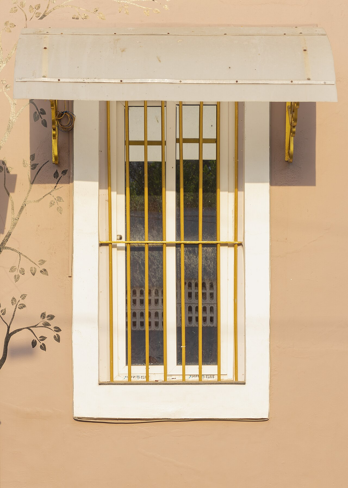
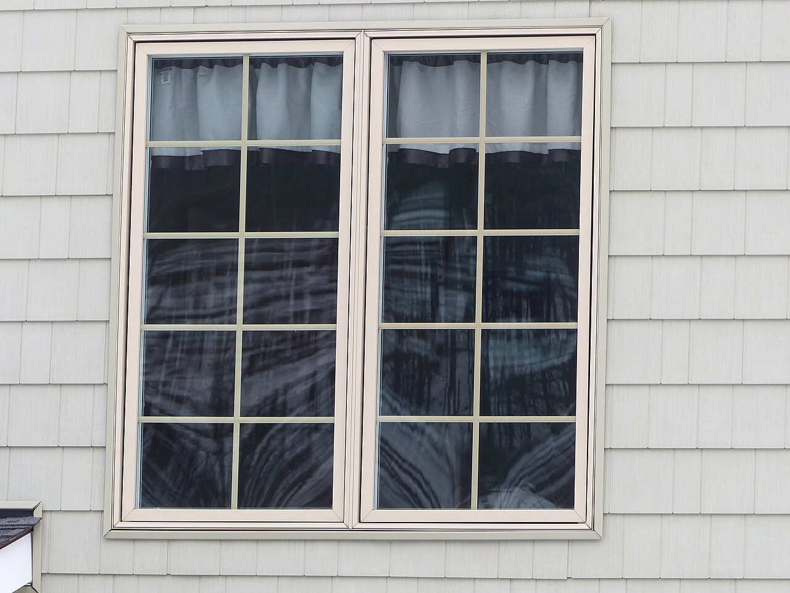
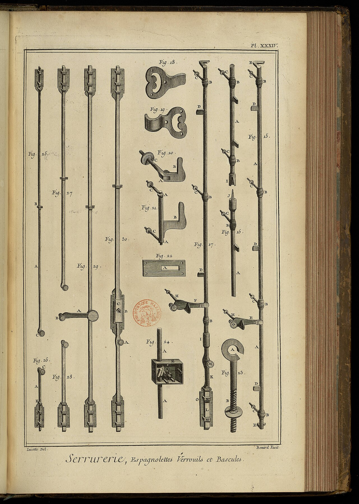
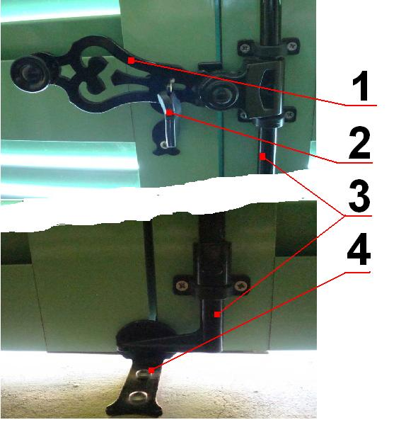

uPVC WINDOWS
& DOORS
profiles · glass · hardware · types · installation
“A window is a machine in a hole in the wall.”
Anatomy of a uPVC window
elevation, seen from inside — every part has a job
1 Outer frame (fixed to wall)
2 Sash — the opening part
3 Mullion (vertical divider)
4 Double-glazed unit
5 Glazing bead + gaskets
6 Handle → gearbox
7 Hinges / stays
8 Locking points (cams)
9 Drainage slots
The material
what is “uPVC” actually?
u · P · V · C
Unplasticised PolyVinyl Chloride — rigid PVC with no plasticisers. (Soft PVC — hoses, cable sheathing — has them added.)
Typical recipe: PVC resin + heat stabilisers (calcium-zinc; lead was phased out in Europe by 2015) + impact modifiers + titanium dioxide (UV protection & the white colour) + lubricants/fillers.
It is a thermoplastic: it softens with heat, so it can be extruded, fusion-welded and recycled.
Because…
No wood fibre to rot, no exposed metal to corrode. Moisture, salt air and most chemicals don't attack it.
Maintenance = wash it. No painting.


How a window is made — factory flow
Colours & finishes
- White is standard (through-coloured).
- Foil laminates — woodgrain (golden oak, walnut) or greys like anthracite.
- Dark colours absorb sun → hotter profile, more expansion, so makers cap sash sizes and add more steel.
The profile
the hollow skeleton of the frame
Section through sash & frame (schematic)
Chambers
The profile is a hollow extrusion split into 3 to 7 chambers. Each trapped air pocket slows heat flow.
Outer chamber → drainage. Middle → steel. Inner → insulation & screw fixing.
Steel inside
Galvanised steel U- or box-sections (≈1.5–2 mm) slide into the main chamber and are screwed in.
They stop long or dark-coloured profiles from bowing under wind load and heat.
Some new systems are steel-free, using bonded glass instead (e.g. aluplast energeto).
Ask for: depth & class
Build depth: 60 / 70 / 76 / 82 mm. Deeper = more chambers, thicker glass.
EN 12608 wall class: A ≥ 2.8 mm outer walls · B ≥ 2.5 mm · C = no minimum. Specify Class A.
Drained, not stopped
Water in the rebate falls into the outer chamber and leaves through hooded weep slots. Corners are welded, so there's no joint to leak.
Never seal over drain slots!
The glass
70–80% of the window's area
Double-glazed unit (DGU) — edge detail
U-value: lower = warmer
centre-of-glass, W/m²K, typical figures

Safety & special glass
- Toughened: ~4–5× stronger, breaks into blunt cubes. Needed near floors & in doors.
- Laminated: PVB interlayer holds the shards together → security & sound control.
- Acoustic: uneven panes (e.g. 6-16-4) so the two panes don't vibrate together.
- Warm-edge spacer (plastic/steel instead of aluminium) = less condensation at the edge.
Window types
how the sash moves
Opening types — elevation symbols
drafting convention: the point of the triangle shows the hinge side


Choosing one
Casement — best seal, full opening; needs swing space outside.
Sliding — no swing, good for balconies; seal is weaker & tracks need drainage.
Tilt & turn — secure ventilation + glass cleaned from inside.
Top-hung — ventilate even in rain. Fixed — cheapest, best performance, biggest panes.
Doors
bigger, heavier, more hardware
Door types — elevation & plan

Bi-fold
Panels fold like a concertina onto rollers. One panel is a “traffic door” for daily use.
Entrance door kit
- Multipoint lock: hooks, bolts & rollers along the whole edge — lifting the lever throws them.
- Euro-profile cylinder: choose anti-snap / anti-bump.
- Flag hinges or 3D-adjustable hinges (height, side, compression).
- Low aluminium threshold (≈15–20 mm) for wheelchair access.
- Reinforced panels; sidelights in toughened or laminated glass.
Hardware: locking
one handle, many locking points
Multipoint lock (espag)
turn the handle → bar slides → cams hook behind keeps
Why so many points?
Each cam pulls the sash onto the gasket → airtight & watertight — and every point is one more place a burglar has to defeat.
Small sash: 2–3 points. Big door: 5–9 points (hooks + bolts + rollers).
Eccentric cams can be rotated to adjust the seal pressure.



Security ratings
EN 1627 RC2 (Europe) / PAS 24 (UK): tested against a burglar with simple tools. Needs the whole set — profile, hardware, glass and fixing.
Hardware: moving
hinges, stays & the tilt-turn trick
Tilt & turn — three handle positions
Friction stay (seen from above)
No visible hinges: the sash is carried on two stays (top & bottom). Egress stays open to 90° for fire escape; restrictors limit opening to ~100 mm.
Hinges
Butt / flag hinges on doors, often 3D-adjustable — up/down, side-to-side and compression — so a sagging door is fixed with an Allen key.
Tilt-turn sashes hang on a corner hinge + top scissor arm.
Small parts
Trickle vents — slots in the head for background air.
Misuse catch — stops tilt & turn happening at once.
Installation
a great window fitted badly is a bad window
Sill section — the “3-layer” seal
Fixing positions
Sequence
- Survey & measure the opening; allow a 5–10 mm gap each side
- Set the frame on load-bearing packers
- Plumb, level, square — check that the diagonals match
- Fix through the frame or with lugs into the wall
- Fill the gap with foam; seal inside & outside
- Glaze on glazing packers (“toe & heel”) so the sash stays square
- Adjust the hardware, test, keep drain slots clear
it does NOT carry load.packers & fixings do
Performance
what the test certificates mean
Thermal
PVC conducts heat at λ ≈ 0.17 W/mK. Aluminium: ≈ 160 — ~1000× more. That's why aluminium needs a “thermal break”.
Typical double-glazed uPVC window: Uw ≈ 1.2–1.4 W/m²K. Deep triple-glazed systems reach < 0.8 (Passivhaus).
Weather tests (EN 14351-1)
- Air permeability — EN 12207, class 1→4
- Watertightness — EN 12208, 1A→9A, E
- Wind load — EN 12210, A/B/C 1→5
Higher class = tested at higher pressure. Ask for the certificate.
Acoustic
Rw ≈ 30–45 dB, decided mostly by the glass (laminated, uneven panes) and by airtight seals. A gap lets sound in more than a thin pane.
Weak points — be honest
- Softens at ≈ 75–80 °C; not a fire-rated material. When it burns it gives off smoke and HCl gas (it does self-extinguish).
- Chunky sightlines compared with aluminium.
- Large or dark spans need steel.
- Hard to repair: a damaged profile is usually replaced.
Life & recycling
Lifespan quoted ≈ 25–35 years. Old frames can be recycled into new profile cores (claims range from 7 to 10 cycles). Europe's VinylPlus programme collects old windows.
uPVC vs the rest
the same window in three materials
Comparison sheet
| uPVC | Aluminium (thermally broken) | Timber | |
|---|---|---|---|
| Cost | Lowest | High | High |
| Whole-window Uw | ≈ 1.2–1.4 | ≈ 1.2–1.6 (needs thermal break) | ≈ 1.3–1.5 |
| Sightlines | Chunky | Slimmest, largest spans | Medium |
| Maintenance | Wash | Wash | Re-finish every 5–8 yrs |
| Lifespan (quoted) | 25–35 yrs | 30–45+ yrs | 40–60+ yrs |
| Coastal / humid | Excellent | Good (marine coat) | Needs care |
| End of life | Recyclable (limited loops) | Highly recyclable | Renewable |
Ranges compiled from manufacturer & industry guides; real values depend on the system — always check the test certificate.
✔ The architect's spec checklist
- Profile system & build depth
- Number of chambers
- EN 12608 Class A walls
- Steel reinforcement
- Glass build-up & Ug
- Safety glass zones
- Whole-window Uw
- Opening types & escape
- Hardware brand & locking points
- Air / water / wind classes
- Security: RC2 / PAS 24
- Colour / foil & size limits
- Installation detail & sill
- Warranty & service


.jpg){kind=link}